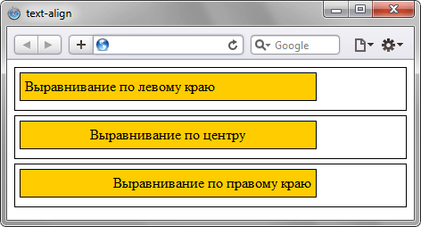
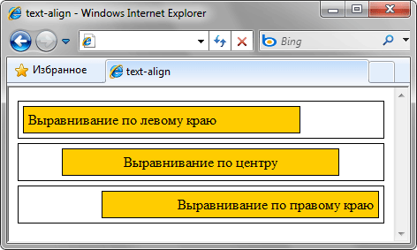

text-align
Определяет горизонтальное выравнивание текста в пределах элемента.
Краткая информация
| Значение по умолчанию | left |
|---|---|
| Наследуется | Да |
| Применяется | Ко всем элементам |
Синтаксис
text-align: center | justify | left | right | start | endЗначения
- center
- Выравнивание текста по центру. Текст помещается по центру горизонтали окна браузера или контейнера, где расположен текстовый блок. Строки текста словно нанизываются на невидимую ось, которая проходит по центру веб-страницы. Подобный способ выравнивания активно используется в заголовках и различных подписях, вроде подрисуночных, он придает официальный и солидный вид оформлению текста. Во всех других случаях выравнивание по центру применяется редко по той причине, что читать большой объем такого текста неудобно.
- justify
- Выравнивание по ширине, что означает одновременное выравнивание по левому и правому краю. Чтобы произвести это действие браузер в этом случае добавляет пробелы между словами.
- left
- Выравнивание текста по левому краю. В этом случае строки текста выравнивается по левому краю, а правый край располагается «лесенкой». Такой способ выравнивания является наиболее популярным на сайтах, поскольку позволяет пользователю легко отыскивать взглядом новую строку и комфортно читать большой текст.
- right
- Выравнивание текста по правому краю. Этот способ выравнивания выступает в роли антагониста предыдущему типу. А именно, строки текста равняются по правому краю, а левый остается «рваным». Из-за того, что левый край не выровнен, а именно с него начинается чтение новых строк, такой текст читать труднее, чем, если бы он был выровнен по левому краю. Поэтому выравнивание по правому краю применяется обычно для коротких заголовков объемом не более трех строк. Мы не рассматриваем специфичные сайты, где текст приходится читать справа налево, там возможно подобный способ выравнивания и пригодится.
- start
- Аналогично значению left, если текст идёт слева направо и right, когда текст идёт справа налево.
- end
- Аналогично значению right, если текст идёт слева направо и left, когда текст идёт справа налево.
Пример
<!DOCTYPE html>
<html>
<head>
<meta charset="utf-8">
<title>text-align</title>
<style>
div {
border: 1px solid black; /* Параметры рамки */
padding: 5px; /* Поля вокруг текста */
margin-bottom: 5px; /* Отступ снизу */
}
#left { text-align: left; }
#right { text-align: right; }
#center { text-align: center; }
.content {
width: 75%; /* Ширина слоя */
background: #fc0; /* Цвет фона */
}
</style>
</head>
<body>
<div id="left"><div class="content">Выравнивание по левому краю</div></div>
<div id="center"><div class="content">Выравнивание по центру</div></div>
<div id="right"><div class="content">Выравнивание по правому краю</div></div>
</body>
</html>Результат данного примера показан на рис. 1.

Рис. 1. Выравнивание текста в браузере Safari
Internet Explorer до версии 7.0 включительно несколько иначе трактует данный пример, чем другие браузеры, выравнивая не только текст, но и блоки (рис. 2).

Рис. 2. Выравнивание текста в браузере Internet Explorer 7
Объектная модель
Объект.style.textAlign
Примечание
IE до версии 7.0 включительно выравнивает не только содержимое блочного элемента, но и сам элемент.
Спецификация
| Спецификация | Статус |
|---|---|
| CSS Text Level 3 | Рабочий проект |
| CSS Level 2 (Revision 1) | Рекомендация |
| CSS Level 1 | Рекомендация |
Браузеры
| Internet Explorer | Chrome | Opera | Safari | Firefox | ||
| left, right, center, justify | 3 | 8 | 1 | 3.5 | 1 | 1 |
| start | 1 | 10 | 3.1 | 1 | ||
| end | 1 | 3.1 | 3.6 | |||
| Android | Firefox Mobile | Opera Mobile | Safari Mobile | |
| left, right, center, justify | 1.5 | 1 | 4 | 1 |
| start | 1.5 | 1 | 10 | 3.1 |
| end | 1.5 | 3.6 | 3.1 |